(a) Starting pose

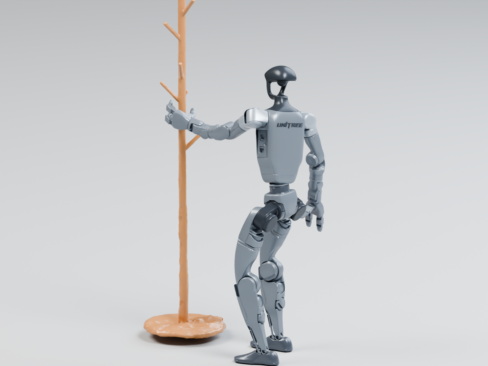
Prepare the clothes-stand lift
The agent corrects foot support and hand clearance before stepping. Root height, leg posture and finger placement change while the object’s initial pose stays fixed.

We argue that robotics is about enacting changes in the environment, and so retargeted motions should produce the same object trajectory.
Consider a person carrying a chair with one hand. Retargeting adapts this demonstration to a humanoid with different proportions, joint limits and strength. Rather than “exactly” reproducing the human’s grasp, we argue that retargeting should preserve the intended change in the environment such that the chair reaches its target location. The humanoid is free to accomplish this within its own physical capabilities (e.g., grasping the chair with two hands instead of one).
Existing methods largely formulate retargeting as optimization. HOI-Retarget fits the robot’s motion to human poses and object-relative contacts, and SPIDER optimizes motor commands in simulation to physically execute this reference (Figs. 1 and 2). However, both objectives favor reproducing the human reference motion. Since recent LLMs such as GPT-6 Astra have become better judges of what works and what needs improvement, we instead ask whether reasoning about the task and the robot’s physical constraints can help the robot follow the object reference motion.
We study this question with HuMoTAR, an agentic approach to retargeting built around two capabilities: reasoning about how to perform the interaction and querying the environment for evidence to guide refinement. Specifically, the agent queries simulation feedback to decide how to revise the robot’s motion and control. For example, after a failed grasp, it requests a close-up of the hands and uses that image to adjust their placement.
Our goal is to produce dynamically feasible humanoid motions from human demonstrations. We compare three approaches to retargeting:
Concretely, the agent receives the human demonstration in SMPL format, an initial kinematic reference from HOI-Retarget, the task scene and the target object trajectory (Fig. 3). The object trajectory specifies the desired object motion, scaled to the robot’s size. From these inputs, the agent writes Python code that generates and refines a reference motion for the whole body and hands.
SONIC provides whole-body control, and the agent may augment or replace its joint-angle outputs to complete the task. MuJoCo simulates each execution. After every trial, the agent inspects feedback (e.g., execution images, object-tracking errors and contact measurements) and revises its motion and control code.
We evaluate all methods on 20 HUMOTO and 20 OMOMO tasks using object-tracking error and semantic success. Object tracking compares the simulated object trajectory with the target object trajectory. However, the robot may move at a different speed than the human, so we do not require the object to reach each position at the same time as in the demonstration. Instead, we compare corresponding stages of the object’s motion.
We average object-tracking errors equally across tasks.
We walk through how Codex uses simulation feedback to refine the robot’s motion and control for lifting, carrying and placing a clothes stand. In this OMOMO task, the robot must lift the stand, carry it through a turn and place it on the floor. As shown in Fig. 3, Codex generates motion and control code from the human demonstration and an initial kinematic reference. It then tests this code in simulation and inspects execution images, object-tracking errors and contact measurements before the next revision.
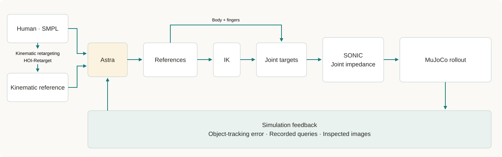

The agent corrects foot support and hand clearance before stepping. Root height, leg posture and finger placement change while the object’s initial pose stays fixed.
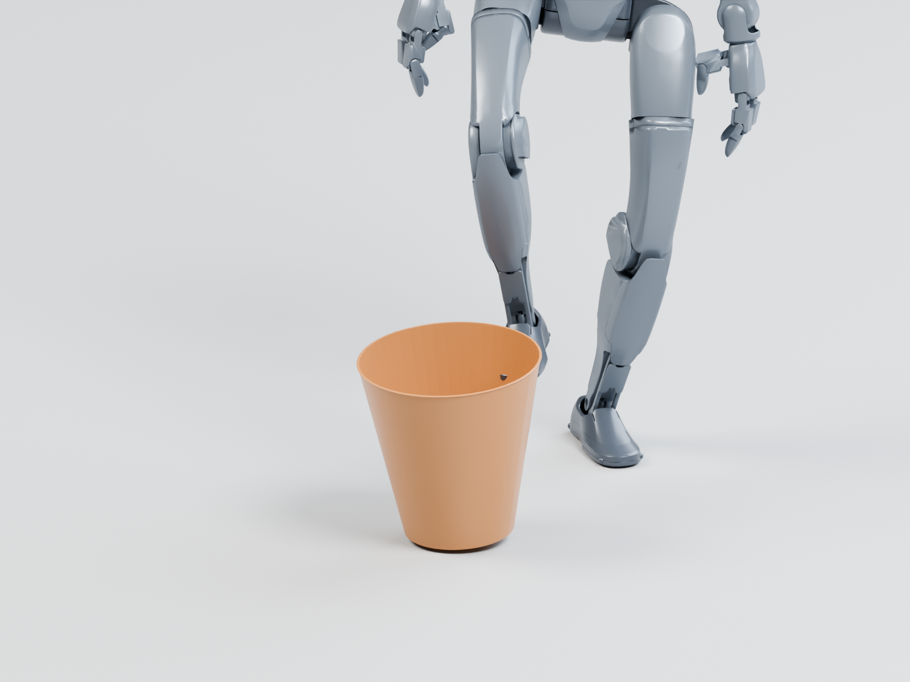
Foot placement and leg motion establish contact near the rim to tilt the bin. The other foot provides support while the right foot directs the interaction.
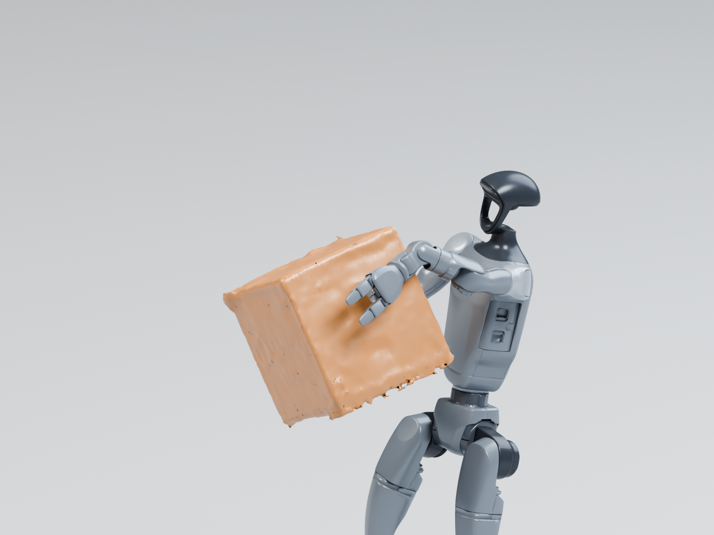
Both hands support the raised box through object-relative arm targets. The controller maintains the grip as the load transfers from the floor to the arms.
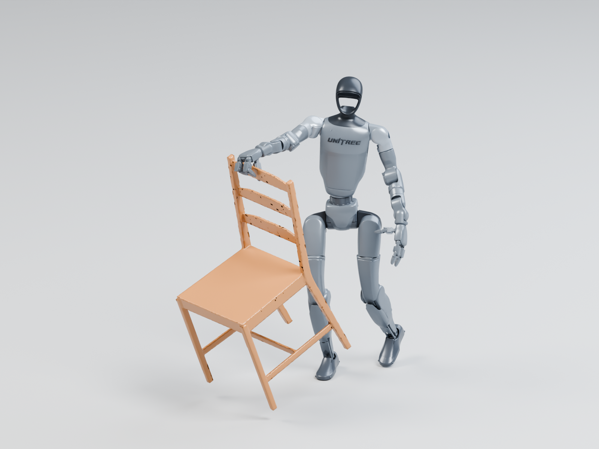
Pelvis-position feedback steers the whole-body reference while arm IK follows the backrest rail. The body advances with the chair while the hand maintains its grasp.
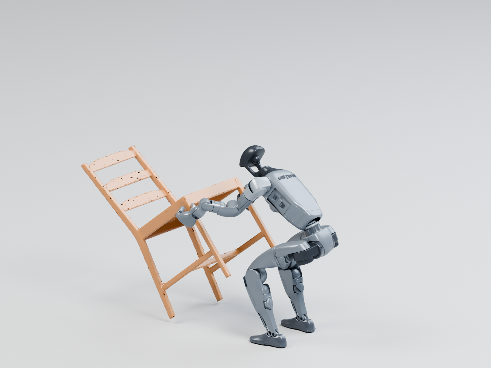
The agent slows the rocking phase and uses object-pose feedback to follow the tilt. Hand opening is staggered as the chair returns upright.
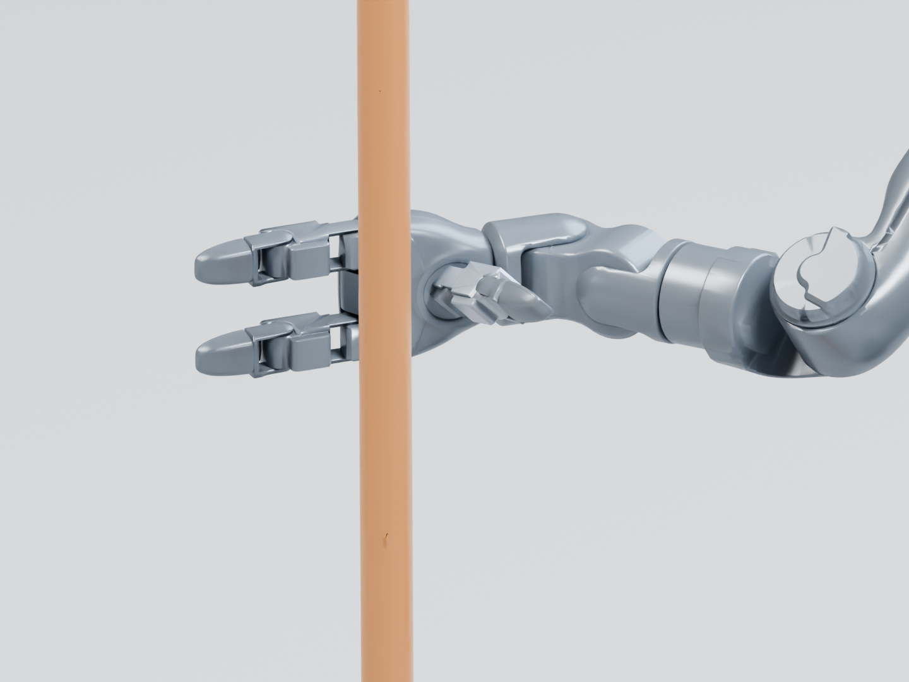
The agent adjusts the base orientation and waits for the lamp to settle before opening the fingers. The hand then withdraws while the floor supports the lamp.
Fig. 6. Selected humanoid–object executions across retargeting configurations.
We first compare Codex against our adaptation of HOI-Retarget + SPIDER to G1 with Dex3 on 20 HUMOTO and 20 OMOMO tasks. We run Codex for two hours per task and include Astra one-shot to measure performance without iterative refinement.
We find that Codex (2 hours) achieves 75% semantic success, outperforming HOI-Retarget + SPIDER (17.5%) by 57.5 points and Astra one-shot (2.5%) by 72.5 points. Similarly, Codex reduces mean object-tracking error to 12.63 cm, compared to 42.87 cm and 62.98 cm for HOI-Retarget + SPIDER and Astra one-shot (n = 39). Notably, Astra one-shot underperforms the optimization baseline on both metrics, highlighting the importance of iterative refinement with simulation feedback for successful physical execution.
| Method | Mean ADD (cm) ↓ | Position (cm) ↓ | Orientation (°) ↓ |
|---|---|---|---|
| HOI-Retarget + SPIDER | 44.96 | 45.11 | 42.98 |
| Astra one-shot | 56.09 | 55.03 | 62.88 |
| Codex 2 hours | 9.85 | 9.07 | 14.74 |
| Method | Mean ADD (cm) ↓ | Position (cm) ↓ | Orientation (°) ↓ |
|---|---|---|---|
| HOI-Retarget + SPIDER | 40.77 | 35.62 | 55.97 |
| Astra one-shot | 69.87 | 65.61 | 58.35 |
| Codex 2 hours n = 19 | 15.55 | 14.16 | 16.46 |


We find that providing related experience, in the form of summaries of tested strategies, successes and failures, aids iterative refinement on a new task, reducing object-tracking error from 23.35 to 7.77 cm at equal compute and time. We illustrate this with a walkthrough of G1 righting a shelf from its side to an upright position. The prior experience comes from four other furniture interactions: carrying a table, lifting a chair, and pulling and pushing a chair.
We first run a four-agent collaborative swarm for 15 minutes and select the best valid motion. From this shared starting solution, we run two separate 15-minute continuations, one with related experience and one without. Since both continuations receive equal time and compute budgets, this comparison isolates the effect of experience on refinement.
Iterative refinement with simulation feedback improves both object tracking and semantic success over one-shot generation. Rather than committing to a single proposal, agents optimize their proposed motions, inspect the resulting executions and revise their motion and control code. These results support using agentic models for retargeting beyond generating an initial solution.
Although HuMoTAR’s reference motions could be used to train whole-body policies for deployment, our experiments combine SONIC with agent-written controllers and do not train task-specific policies. A natural next step is to evaluate whether RL fine-tuning on these references helps the robot handle disturbances and scene changes. We leave policy training and hardware deployment to future work.
In Fig. 9, G1 must lift and swirl a plate to reproduce the human’s interaction. Although it lifts the plate, it fails to complete the swirling motion. The agents adjust finger placement and try two-handed support, yet the grasp remains unstable during rotation. We posit that this difficulty can be attributed to the morphological gap between human hands and G1’s Dex3 hands: the fingers struggle to establish a stable grasp around the plate’s thin rim. Notably, none of the tested motion and controller revisions fully compensate for this mismatch.
Rather than providing a human motion reference or target object trajectory, we give a single Codex agent a detailed task description, the scene and an initial robot–object state. The agent then refines an execution that follows the description, using SONIC for the legs and waist and custom arm and hand control. We show five examples below, each with its supplied command and resulting simulated motion.
Text command
A basket rests on the floor in front of the person. Bend toward it and reach down with the right hand to take its handle. Lift the basket clear of the floor while straightening the body. Bring it in front of the torso, then use the other hand to help steady and turn it for inspection. Tilt and rotate the basket so its opening and different sides can be examined, rather than simply holding it motionless. Keep it under control throughout the lift and the changes in orientation. Finish standing with the basket held in front of the body; the demonstrated sequence ends while it is still being held.
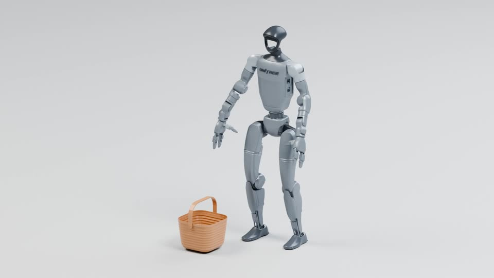
Text command
A small wooden side table with a raised curved rail stands on the floor in front of the person. Bend down, grasp the raised rail and lift the table off the floor as the body straightens. Keep the tabletop approximately level and the legs directed downward. Lower it back onto its legs in front of the body, then pause with the table supported on the floor. Bend toward it again and repeat the lifting action. Make the separate pickup, lowering, supported pause and renewed pickup recognizable, rather than replacing them with a single static hold or dragging the table along the floor. Remain near the table and keep each movement controlled.
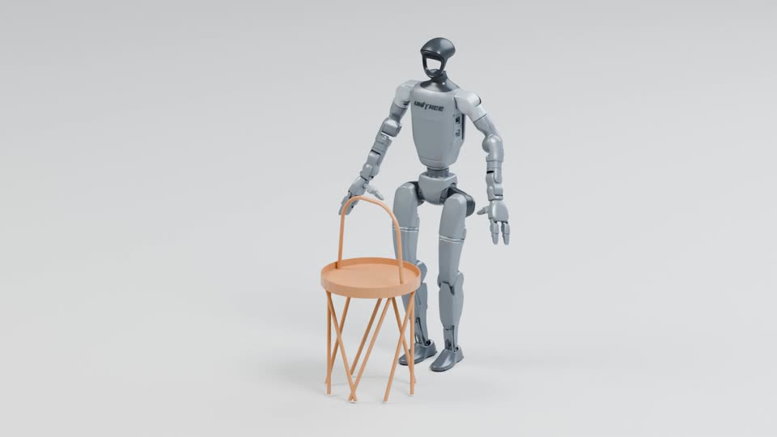
Text command
Hold the small wooden side table with both hands in front of the torso, keeping its legs clear of the floor. Walk while carrying it along a curved path that turns the body through several facing directions, then comes back toward the starting area. The table travels with the person and turns with the body; its legs remain generally downward and the tabletop remains approximately level, with natural tilting during the turns. Keep both hands supporting the table while stepping and changing direction. Finish the walking sequence still holding the table in front of the body. The interaction should show sustained transport and turning, not stationary lifting or sliding on the floor.
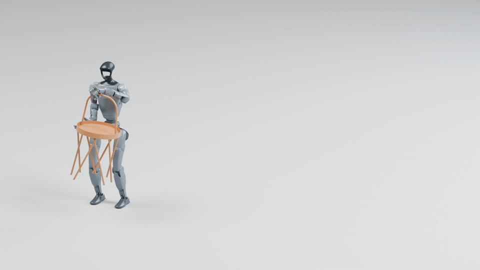
Text command
Stand beside a tall freestanding clothes stand with a circular base and branches near the top. Reach to its vertical pole around waist height with one hand. Lift its base clear of the floor, then take a few steps to move the stand to a nearby position while keeping the pole mostly upright. Move the body together with the stand rather than reaching from a fixed stance. Lower the circular base onto the floor, allow the stand to settle upright, and release the pole. Finish beside the independently standing object with the hand withdrawn. The lift, short transport and deliberate placement should be clearly visible.
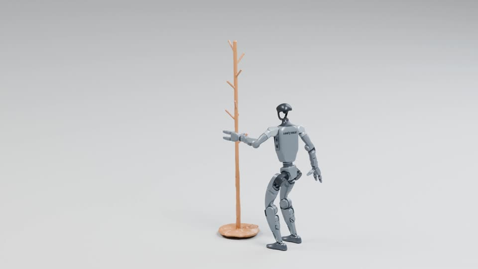
Text command
Face a wooden chair and bend toward it, placing both hands around the sides of the seat or nearby frame. Tilt and rock the chair so its seat and back lean and one pair of legs rises while the other pair remains near the floor. Guide the chair back toward an upright orientation and bring all four legs down under control. Keep the hands engaged while the chair changes orientation, and adjust the body with the movement. Finish with the chair upright and supported on its legs. This is a controlled rocking and righting interaction, not carrying the chair away or allowing it to fall.
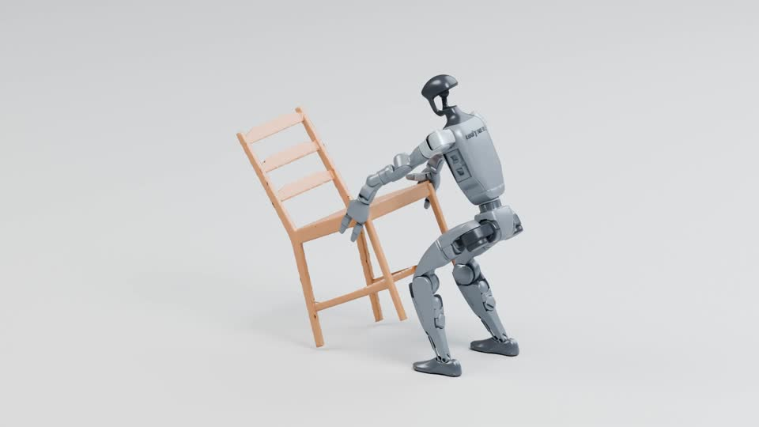
Fig. A1. Simulated executions generated from text descriptions.
Narayanan Palghat Parameswaran, Jay Karhade, Haoyang He, Neehar Peri, Jay Patrikar, Dong-Ki Kim, Shayegan Omidshafiei, Sebastian Scherer, Deva Ramanan. HuMoTAR: Retargeting Through Reasoning for Humanoid–Object Interaction. 2026.
@misc{parameswaran2026humotar,
title = {HuMoTAR: Retargeting Through Reasoning for Humanoid–Object Interaction},
author = {Palghat Parameswaran, Narayanan and Karhade, Jay and He, Haoyang
and Peri, Neehar and Patrikar, Jay and Kim, Dong-Ki
and Omidshafiei, Shayegan and Scherer, Sebastian and Ramanan, Deva},
year = {2026},
howpublished = {Project blog},
url = {https://narayananpp.github.io/semantic-humanoid-retargeting-blog/}
}